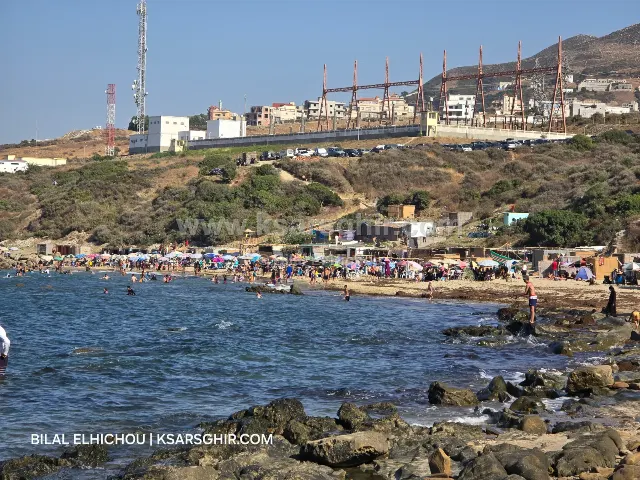
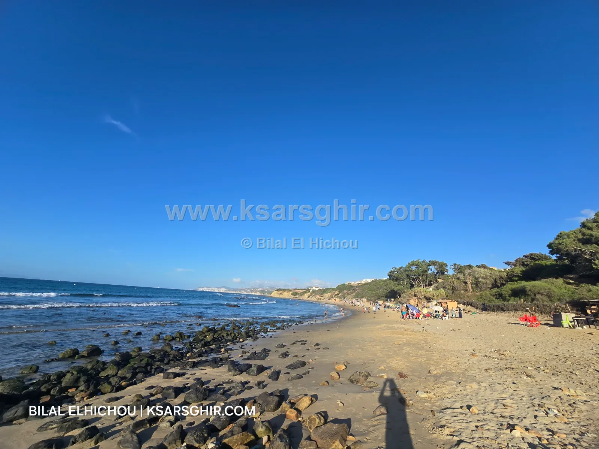

🏖️ Beaches
Ghojin / Srama Beach: a quiet sandy cove 8 km west of Ksar Sghir, quiet and family-friendly, lifeguards June to September, seasonal kiosks and restaurants, buses I3 and I12.

A small, quiet sandy cove 8 km from Ksar Sghir, ideal for families escaping the crowds. Lifeguards from June to September, seasonal kiosks and restaurants.
Ghojin / Srama Beach lies on the coast road between Tangier and Ksar Sghir, west of Ksar Sghir, about 8 km away, between Zahara / Hatba and Ferdiwa. It belongs to the municipality of Ksar Sghir, Fahs-Anjra province.
A small, quiet cove of about 100 to 400 metres, with clean sand. A good spot for children, with supervision. From the sand you look out over the Strait and the ships crossing it all day.
Ghojin / Srama draws people looking for a quiet family day. The cove is small and sheltered and the atmosphere family-friendly, away from the crowds of the main beaches in August. A good place to sit facing the Strait, swim and watch ships pass between two continents.
As elsewhere in the area, waves stay normal with the Levante and get a little bigger with the Poniente, which is when to pay more attention, especially with children. In summer the waves are usually fine for swimming; in winter swimming is not advised. Check Sea today before you go.
In summer, early morning is the quietest time. June and September are calmer than August, with lifeguards on duty.
About 8 km west of Ksar Sghir, on the coast road towards Tangier; it belongs to the municipality of Ksar Sghir.
Yes, from June to September.
Yes, it is a quiet beach with clean sand, good for families as long as you watch the kids, especially on Poniente days.
Yes, lines I3 and I12 from Tangier train station pass right by.